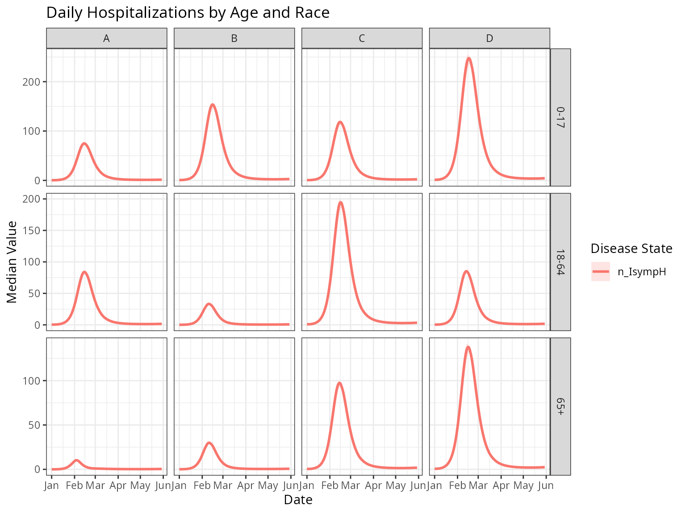
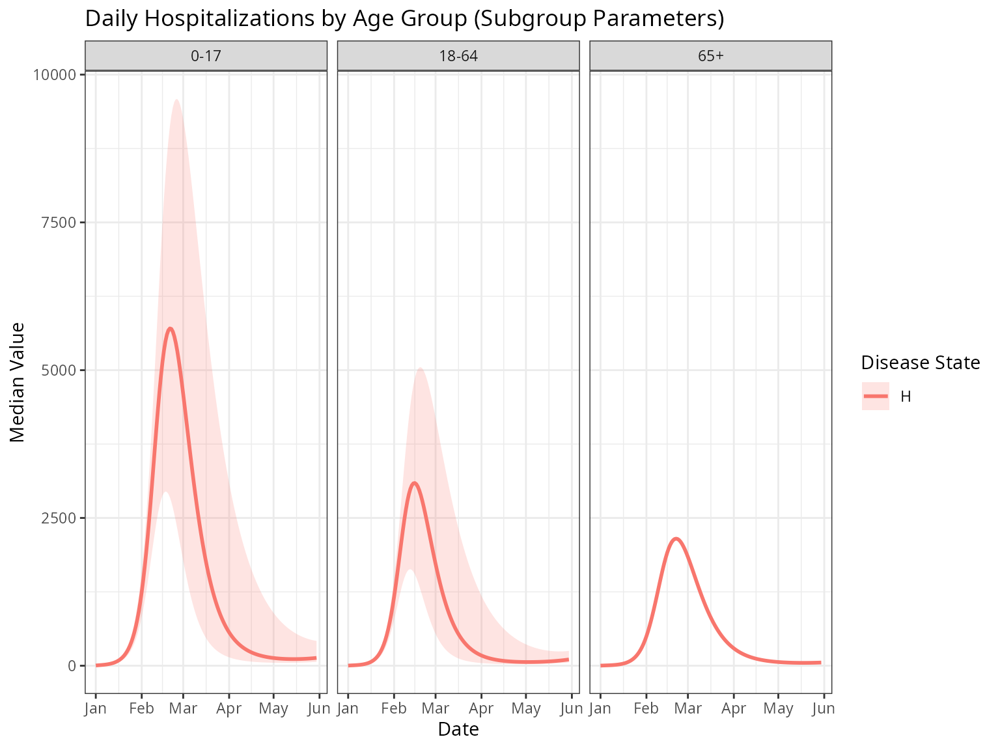

Running a Simulation with metaRVM
Source:vignettes/running-a-simulation.Rmd
running-a-simulation.RmdIntroduction
This vignette demonstrates how to run a metaRVM
simulation using the example configuration and data files included with
the package. This is a good way to get started and understand the basic
workflow.
Locating the Example Files
The metaRVM package includes a set of example files in
its extdata directory. To run the example, we first need to
locate these files. The system.file() function in R is the
recommended way to do this, as it will find the files wherever the
package is installed.
# Locate the example YAML configuration file
yaml_file <- system.file("extdata", "example_config.yaml", package = "MetaRVM")
print(yaml_file)
#> [1] "/tmp/RtmpctkTqu/temp_libpathf0c6a932b09b/MetaRVM/extdata/example_config.yaml"The yaml_file variable now holds the full path to the
example configuration file. This file is set up to use the other example
data files (also in the extdata directory) with relative
paths. Below is the content of the yaml file.
run_id: ExampleRun
population_data:
mapping: demographic_mapping_n24.csv
initialization: population_init_n24.csv
vaccination: vaccination_n24.csv
mixing_matrix:
weekday_day: m_weekday_day.csv
weekday_night: m_weekday_night.csv
weekend_day: m_weekend_day.csv
weekend_night: m_weekend_night.csv
disease_params:
ts: 0.5
tv: 0.25
ve: 0.4
dv: 180
dp: 1
de: 3
da: 5
ds: 6
dh: 8
dr: 180
pea: 0.3
psr: 0.95
phr: 0.97
simulation_config:
start_date: 01/01/2023 # m/d/Y
length: 150
nsim: 1Running the Simulation
Once we have the path to the configuration file, the simulation can
be run using the metaRVM() function.
# Load the metaRVM library
library(MetaRVM)
options(odin.verbose = FALSE)
# Run the simulation
sim_out <- metaRVM(yaml_file)
#> Loading required namespace: pkgbuildThe metaRVM() function will parse the YAML file, read
the associated data files, run the simulation, and return a
MetaRVMResults object.
Deep-dive into MetaRVM Classes
Working with Configuration Files
The simulation can be run by directly providing a YAML configuration
file path, or by creating a MetaRVMConfig object.
# Load configuration from YAML file
config_obj <- MetaRVMConfig$new(yaml_file)
# Examine the configuration
config_obj
#> MetaRVM Configuration Object
#> ============================
#> Config file: /tmp/RtmpctkTqu/temp_libpathf0c6a932b09b/MetaRVM/extdata/example_config.yaml
#> Parameters: 40
#> Parameter names (first 10): N_pop, pop_map, S_ini, E_ini, I_asymp_ini, I_presymp_ini, I_symp_ini, H_ini, D_ini, P_ini ...
#> Population groups: 24
#> Start date: 2023-09-30
#> Population mapping: [ 24 rows x 4 columns]Exploring Configuration Parameters
The MetaRVMConfig class provides several methods to
explore the simulation arguments:
# List all available parameters
param_names <- config_obj$list_parameters()
head(param_names, 10)
#> [1] "N_pop" "pop_map" "S_ini" "E_ini"
#> [5] "I_asymp_ini" "I_presymp_ini" "I_symp_ini" "H_ini"
#> [9] "D_ini" "P_ini"
# Get a summary of parameter types and sizes
param_summary <- config_obj$parameter_summary()
head(param_summary, 10)
#> parameter type length size
#> N_pop N_pop integer 1 1
#> pop_map pop_map data.table 4 4
#> S_ini S_ini integer 24 24
#> E_ini E_ini numeric 24 24
#> I_asymp_ini I_asymp_ini numeric 24 24
#> I_presymp_ini I_presymp_ini numeric 24 24
#> I_symp_ini I_symp_ini integer 24 24
#> H_ini H_ini numeric 24 24
#> D_ini D_ini numeric 24 24
#> P_ini P_ini integer 24 24Accessing Demographic Information
One of MetaRVM’s key features is demographic stratification, and it’s ability to define parameters for specific demographic strata.
# Get demographic categories
age_categories <- config_obj$get_age_categories()
race_categories <- config_obj$get_race_categories()
zones <- config_obj$get_zones()
cat("Age categories:", paste(age_categories, collapse = ", "), "\n")
#> Age categories: 0-17, 18-64, 65+
cat("Race categories:", paste(race_categories, collapse = ", "), "\n")
#> Race categories: A, B, C, D
cat("Geographic zones:", paste(zones, collapse = ", "), "\n")
#> Geographic zones: 11, 22Alternative Ways to Run the Simulation
# Method 1: Direct from file path
# sim_out <- metaRVM(config_file)
# Method 2: From MetaRVMConfig object
sim_out <- metaRVM(config_obj)
# Method 3: From parsed configuration list
config_list <- parse_config(yaml_file)
sim_out <- metaRVM(config_list)Exploring the Results
The metaRVM() function returns a
MetaRVMResults object with formatted, analysis-ready data.
The results are formatted with calendar dates and demographic
attributes, and stored in a data frame called results:
# Look at the structure of formatted results
head(sim_out$results)
#> date age race zone disease_state value instance
#> <Date> <char> <char> <char> <char> <num> <int>
#> 1: 2023-10-01 0-17 A 11 D 2.252583e-04 1
#> 2: 2023-10-01 0-17 A 11 E 1.305178e+01 1
#> 3: 2023-10-01 0-17 A 11 H 2.304447e-01 1
#> 4: 2023-10-01 0-17 A 11 I_all 2.731688e+01 1
#> 5: 2023-10-01 0-17 A 11 I_asymp 3.227854e-01 1
#> 6: 2023-10-01 0-17 A 11 I_eff 2.476245e+01 1
# Check unique values for key variables
cat("Disease states:", paste(unique(sim_out$results$disease_state), collapse = ", "), "\n")
#> Disease states: D, E, H, I_all, I_asymp, I_eff, I_presymp, I_symp, P, R, S, V, cum_V, mob_pop, n_EI, n_EIpresymp, n_HD, n_HR, n_HRD, n_IasympR, n_IsympH, n_IsympR, n_IsympRH, n_SE, n_SV, n_VE, n_VS, n_preIsymp, p_HRD, p_SE, p_VE
cat("Date range:", paste(range(sim_out$results$date), collapse = " to "), "\n")
#> Date range: 2023-10-01 to 2024-02-27Data Subsetting and Filtering
The subset_data() method provides flexible filtering
across all demographic and temporal dimensions. It returns an object of
class MetaRVMResults.
# Subset by single criteria
hospitalized_data <- sim_out$subset_data(disease_states = "H")
hospitalized_data$results
#> date age race zone disease_state value instance
#> <Date> <char> <char> <char> <char> <num> <int>
#> 1: 2023-10-01 0-17 A 11 H 0.2304447 1
#> 2: 2023-10-01 0-17 B 11 H 0.5203590 1
#> 3: 2023-10-01 0-17 C 11 H 0.6244308 1
#> 4: 2023-10-01 0-17 D 11 H 1.4867401 1
#> 5: 2023-10-01 18-64 A 11 H 0.3047817 1
#> ---
#> 3596: 2024-02-27 18-64 D 22 H 3.0363099 1
#> 3597: 2024-02-27 65+ A 22 H 1.1367252 1
#> 3598: 2024-02-27 65+ B 22 H 1.8119748 1
#> 3599: 2024-02-27 65+ C 22 H 10.5239938 1
#> 3600: 2024-02-27 65+ D 22 H 11.8169822 1
# Subset by multiple demographic categories
elderly_data <- sim_out$subset_data(
age = c("65+"),
disease_states = c("H", "D")
)
elderly_data$results
#> date age race zone disease_state value instance
#> <Date> <char> <char> <char> <char> <num> <int>
#> 1: 2023-10-01 65+ A 11 D 2.179919e-05 1
#> 2: 2023-10-01 65+ A 11 H 2.230110e-02 1
#> 3: 2023-10-01 65+ B 11 D 8.719675e-05 1
#> 4: 2023-10-01 65+ B 11 H 8.920441e-02 1
#> 5: 2023-10-01 65+ C 11 D 8.719675e-05 1
#> ---
#> 2396: 2024-02-27 65+ B 22 H 1.811975e+00 1
#> 2397: 2024-02-27 65+ C 22 D 7.200555e+01 1
#> 2398: 2024-02-27 65+ C 22 H 1.052399e+01 1
#> 2399: 2024-02-27 65+ D 22 D 8.575588e+01 1
#> 2400: 2024-02-27 65+ D 22 H 1.181698e+01 1
# Specific date range
peak_period <- sim_out$subset_data(
date_range = c(as.Date("2023-10-01"), as.Date("2023-12-31")),
disease_states = "H"
)
#> 19631
#> 19722
peak_period$results
#> date age race zone disease_state value instance
#> <Date> <char> <char> <char> <char> <num> <int>
#> 1: 2023-10-01 0-17 A 11 H 0.2304447 1
#> 2: 2023-10-01 0-17 B 11 H 0.5203590 1
#> 3: 2023-10-01 0-17 C 11 H 0.6244308 1
#> 4: 2023-10-01 0-17 D 11 H 1.4867401 1
#> 5: 2023-10-01 18-64 A 11 H 0.3047817 1
#> ---
#> 2204: 2023-12-31 18-64 D 22 H 10.4461399 1
#> 2205: 2023-12-31 65+ A 22 H 1.4218017 1
#> 2206: 2023-12-31 65+ B 22 H 4.4579963 1
#> 2207: 2023-12-31 65+ C 22 H 55.2328788 1
#> 2208: 2023-12-31 65+ D 22 H 74.7225667 1Specifying Disease Parameter via Distributions
metaRVM allows for disease parameters to be specified as
distributions, which is useful for capturing uncertainty. When a
parameter is defined by a distribution, each simulation instance will
draw a new value from that distribution. For more details on the
available distributions and their parameters, refer to the
yaml-configuration vignette.
An example YAML file with parameter distributions is included in the
package, example_config_dist.yaml. Here is its content:
# Locate the example YAML configuration file with distributions
yaml_file_dist <- system.file("extdata", "example_config_dist.yaml", package = "MetaRVM")run_id: ExampleRun_Dist
population_data:
mapping: demographic_mapping_n24.csv
initialization: population_init_n24.csv
vaccination: vaccination_n24.csv
mixing_matrix:
weekday_day: m_weekday_day.csv
weekday_night: m_weekday_night.csv
weekend_day: m_weekend_day.csv
weekend_night: m_weekend_night.csv
disease_params:
ts: 0.5
tv: 0.25
ve:
dist: uniform
min: 0.3
max: 0.5
dv: 180
dp: 1
de: 3
da:
dist: uniform
min: 4
max: 6
ds:
dist: uniform
min: 5
max: 7
dh:
dist: lognormal
mu: 2
sd: 0.5
dr: 180
pea: 0.3
psr: 0.95
phr: 0.97
simulation_config:
start_date: 01/01/2023 # m/d/Y
length: 150
nsim: 20 # Increased nsim for meaningful summary statisticsTo run a simulation with this configuration, we pass the file path to
metaRVM.
# Run the simulation with the new configuration
sim_out_dist <- metaRVM(yaml_file_dist)Generating Summary Statistics across Demographics
The MetaRVMResults class provides basic summarization
functionality across multiple instances of the simulation, when one or
more disease parameters are specified via distribution, and there are
more than one simulations per configurations. The summarize
method generates output of class MetaRVMSummary which has a
plot method available to use. Now that we have run a
simulation with parameter distributions, we can use the
summarize method to see the variability in the results.
library(ggplot2)
# Summarize hospitalizations by age group
hospital_summary_dist <- sim_out_dist$summarize(
group_by = c("age"),
disease_states = "n_IsympH",
stats = c("median", "quantile"),
quantiles = c(0.05, 0.95)
)
# Plot the summary
hospital_summary_dist$plot() + ggtitle("Daily Hospitalizations by Age Group (with 90% confidence interval)") + theme_bw()
#> Warning: Using `size` aesthetic for lines was deprecated in ggplot2 3.4.0.
#> ℹ Please use `linewidth` instead.
#> ℹ The deprecated feature was likely used in the MetaRVM package.
#> Please report the issue at <https://github.com/RESUME-Epi/MetaRVM/issues>.
#> This warning is displayed once every 8 hours.
#> Call `lifecycle::last_lifecycle_warnings()` to see where this warning was
#> generated.
# Summary of hospitalizations by age and race group
hospital_summary <- sim_out_dist$summarize(
group_by = c("age", "race"),
disease_states = "n_IsympH",
stats = c("median", "quantile"),
quantiles = c(0.05, 0.95)
)
hospital_summary
#> MetaRVM Summary Object
#> ======================
#> Data type: summary
#> Observations: 1800
#> Grouped by: age, race
#> Disease states: n_IsympH
#> Date range: 2023-01-01 to 2023-05-30
#> Summary statistics: median_value, q05, q95
# visualize the summary
hospital_summary$plot() + ggtitle("Daily Hospitalizations by Age and Race") + theme_bw()
Specifying Disease Parameters by Demographics
The disease parameters can also be specified for different
demographic subgroups. These subgroup-specific parameters will override
the global parameters. For more details, refer to the
yaml-configuration vignette. An example YAML file is
provided, example_config_subgroup_dist.yaml, that
demonstrates this feature. It also includes parameters defined by
distributions.
# Locate the example YAML configuration file with subgroup parameters
yaml_file_subgroup <- system.file("extdata", "example_config_subgroup_dist.yaml", package = "MetaRVM")run_id: ExampleRun_Subgroup_Dist
population_data:
mapping: demographic_mapping_n24.csv
initialization: population_init_n24.csv
vaccination: vaccination_n24.csv
mixing_matrix:
weekday_day: m_weekday_day.csv
weekday_night: m_weekday_night.csv
weekend_day: m_weekend_day.csv
weekend_night: m_weekend_night.csv
disease_params:
ts: 0.5
tv: 0.25
ve:
dist: uniform
min: 0.3
max: 0.5
dv: 180
dp: 1
de: 3
da: 5
ds: 6
dh:
dist: lognormal
mu: 2
sd: 0.5
dr: 180
pea: 0.3
psr: 0.95
phr: 0.97
sub_disease_params:
age:
0-17:
pea: 0.08
18-64:
ts: 0.6
65+:
# This fixed value will override the global lognormal distribution for dh
dh: 10
phr: 0.9227
simulation_config:
start_date: 01/01/2023 # m/d/Y
length: 150
nsim: 20Now, let’s run the simulation with this configuration.
# Run the simulation with the subgroup configuration
sim_out_subgroup <- metaRVM(yaml_file_subgroup)We can now plot the results to see the impact of the
subgroup-specific parameters. For example, we can compare the number of
hospitalizations in the “65+” age group, which has a dh of
10, to other age groups that use the global dh drawn from a
lognormal distribution.
# Summarize hospitalizations by age group
hospital_summary_subgroup <- sim_out_subgroup$summarize(
group_by = c("age"),
disease_states = "H",
stats = c("median", "quantile"),
quantiles = c(0.025, 0.975)
)
# Plot the summary
hospital_summary_subgroup$plot() + ggtitle("Daily Hospitalizations by Age Group (Subgroup Parameters)") + theme_bw()